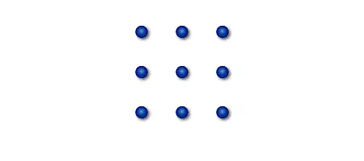
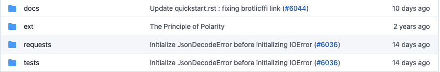
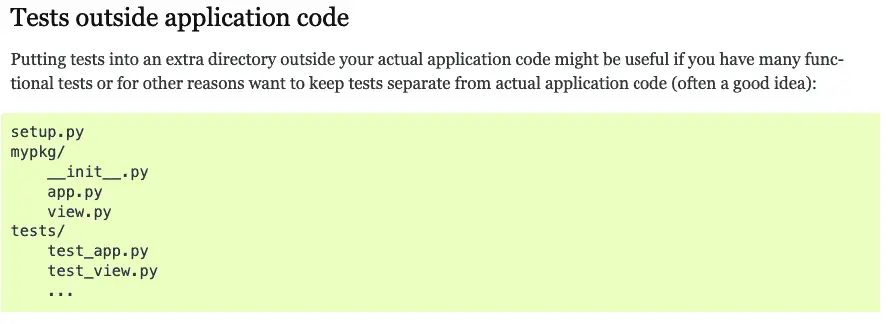

How To Separate Source and Tests in Python
Separating tests and source is not hard to do in Python, if you start your source directory at the root of the package structure. This is not hard in principle, but it trips up developers coming from other languages. We review how one popular library does it (which is in line with the pytest docs), and share a simple starter repository.
A friend and former co-worker was good enough to submit a comment on my Python Packages post recently where he reminded me of an article I wanted to write. This is a problem he’d mentioned to me in the past, and it was one I had struggled with as well from time to time. I’m going to show a solution for pytest, which is a very common testing framework for Python. (You’ll need to install the pytest package to use it).
Here’s the issue. Let’s say you have a package named “mypackage”, and you want to keep your unit tests separate from your package structure. Inside mypackage you have a simple function in greeter.py.
# greeter.py
"""greeter module contains one testable function"""
def greet(name: str = None) -> str:
"""greet is a hello world style function to have something to test."""
if name is None:
return "Hello, World!"
else:
return f"Hello, {name}!"
To test this, you want a test_greeter.py file somewhere to write your unit tests for the function, but you don’t want it to live with the source. That’s not something all Python teams do, by the way, but it’s a reasonable choice.
So, especially if you come from a Java background, but even if you come from a number of other languages, you probably think you should have a folder structure that looks like this:
src/mypackage/greeter.py
test/mypackage/test_greeter.py
Another possibility is that you’re trying to simplify things, and realizing that you only have one top-level package, you decide to just put your tests at the root of the test directory:
src/mypackage/greeter.py
tests/test_greeter.py
tests/__init__.py
I not only moved the test_greeter.py file, I also added an empty __init__.py file to the test directory. I also renamed “test” to “tests” to line it up with a Python convention we’ll see later on. For now, let’s move on and write our test:
test/test_greeter.py
"""tests the myapp.greeter module"""
from mypackage.greeter import greet
def test_greeter_returns_hello_world_if_no_name_provided():
assert greet() == "Hello, World!"
def test_greeter_returns_hello_name_if_name_provided():
assert greet("John") == "Hello, John!"
We should be able to see some goodness now if we type “pytest” at the root of the project, right? Well, that would be nice, but instead what we see is pytest displaying an error. Pytest really lets you know, too, with plenty of uppercase letters and exclamation points. Boiling it down to the relevant message, we see this:
E ModuleNotFoundError: No module named 'mypackage'
Solution? Code Python in Python.
The issue here is just that mypackage is not the root of the package structure, src is. For Java programmers, in Maven we’re used to having a src/main and a src/test folder as the root of the source and tests, respectively.
We can fix this in a number of ways. Let’s look at three ways I’m not going to recommend first.
First, we can change our import line in the test file to read:
from src.mypackage.greeter import greet
I don’t care for this solution, because tests should also serve as documentation of how to use the package. A user wants to import things from the package itself. src is just a directory.
Second, we could do this:
export PYTHONPATH=src
pytest
That works OK, but it’s an extra step that we might forget to do, and environment variables just to get things to work is always a bit of a code smell.
Third, we could just do add this little gem to the top of our test file, ahead of any other imports:
import sys
sys.path.append("src")
That works fine, but now instead of doing it once in the environment, we have to do it for every test file. Again, we might forget.
The best solution in my opinion is one that looks really strange for a Java developer (or even for someone familiar with Node.js), but it’s fairly idiomatic in Python. That’s simply to realize that src directory doesn’t need to be there!
Have You Seen This Puzzle?
You may have seen this puzzle, where you’re asked to connect all the dots using four lines – without lifting your pen from the paper.

Most people will scratch their heads over this one for a long time, but once you’re given the hint that the lines can extend beyond the dots, it’s pretty simple to solve. (If not, search for “nine-dots puzzle” on Google if it’s driving you crazy).
So how should our source look, now that we are – rather literally – thinking outside the box?
Here’s the GitHub repository if you want to download it, but it’s pretty simple, really:
mypackage
│ └── greeter.py
tests
│ ├── __init__.py
│ └── test_greeter.py
That’s Crazy Talk – Right?
Well, is it? Let’s take a hugely popular Python package for making HTTP requests, the appropriately named “requests” package. Here’s a screenshot from their GitHub repository. Pay attention to the last two lines:

Now we see why I renamed “test” to “tests”.
Or when all else fails, read the documentation. Here’s a screenshot from some documentation I found on pytest:

You can see their structure is similar to mine.
In retrospect, I might have led with that pytest documentation. However, I did want to make a point about some of the blinders we wear when we approach a new language – or at least, that happens to me. Making everything a class in Python is one of those obvious things that might get you a response like “Oh, you used to be a Java guy, right?” Now I know that the src directory is another tell-tale sign.